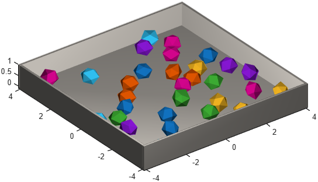
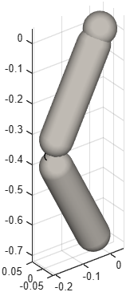

Building whole groups of parts with one call
The phx.assembly package holds prefab builders — functions
that create a whole group of ordinary phx.* parts at once. The
returned bodies and joints are in no way special: you can restyle, retexture or delete them
afterwards exactly as if you had built them by hand.
| Builder | What it creates |
|---|---|
| phx.assembly.arena | A static floor plate enclosed by four walls — keeps dynamic bodies from escaping the scene. |
| phx.assembly.chain | A chain of rigid links jointed along a polyline — pendulums, hanging chains, cables. |
| phx.assembly.scatter | A given number of bodies scattered without overlaps inside a box region — piles of rocks, granular material. |
| phx.assembly.import | A robot or mechanism imported from a URDF file — bodies plus the joints connecting them. |
phx.assembly.arena(ax, …); an empty target
([]) creates the parts without graphics for headless
simulations.Position and
Orientation (or EulerAngles)
that place the whole assembly in the world.parts.floor and parts.walls.clf; view(3); axis equal; grid on; camlight headlight; phx.assembly.arena("Size", [8 8 1]); rng(0); rocks = phx.assembly.scatter({"Rock", "Radius", 0.4}, 30, ... "Region", [7 7 4], "Spacing", 0.8, "Position", [0 0 1]); sim = phx.Simulation; sim.step(3, 600, 6); delete(sim);

clf; view(3); axis equal; grid on; camlight headlight;
parts = phx.assembly.chain([0 0 0; 0.4 0 0; 0.8 0 0], ...
"Anchor", "start", "Axis", [0 1 0]);
sim = phx.Simulation;
sim.step(5, 2000, 5);
delete(sim);

clf; view(3); axis equal; grid on; camlight headlight; [bodies, joints] = phx.assembly.import("robot.urdf"); bodies.base.Type = "static"; sim = phx.Simulation(bodies); sim.step(1, 500, 5); delete(sim);